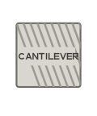
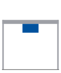
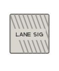
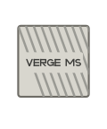
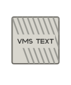
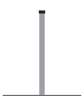
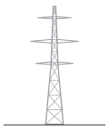
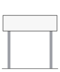
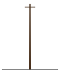
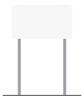

Street furniture (2D)
Signage Atlas posts, mounts, beacons, poles, gantries and VMS rows (2D elevations).
14 items: Drawn 9, Placeholder 5
gantry-vms
6 items: Drawn 1, Placeholder 5

gantry-cantileverCantilever gantryPlaceholder
gantry-portalPortal gantryDrawn
lane-signalSmart motorway lane signal (AMI)Placeholder
verge-msVerge-mounted message signPlaceholdervms-pictogramPictogram variable message signPlaceholder
vms-textLarge text variable message signPlaceholderposts-and-mounts
8 items: Drawn 8
 belishaBelisha beaconDrawn
belishaBelisha beaconDrawn
chs-114114 mm circular postDrawnchs-219219 mm gantry or cantilever legDrawnchs-7676 mm circular postDrawn
pylon-l12dLattice pylonDrawn
street-name-postsStreet-name postsDrawn
telegraphTelegraph poleDrawn
two-postTwo-post direction-sign mountDrawn